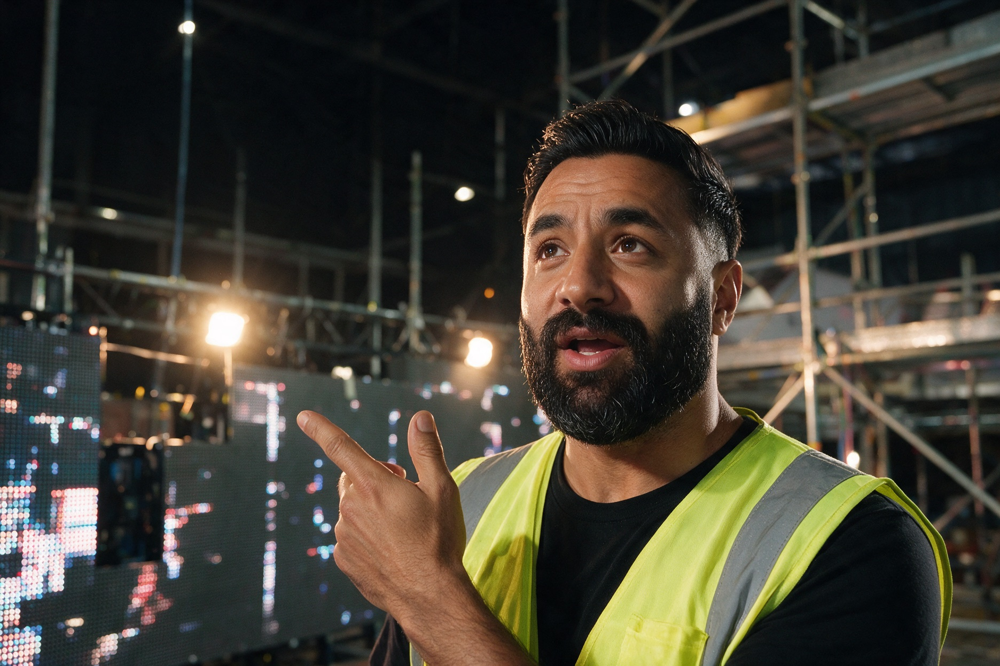
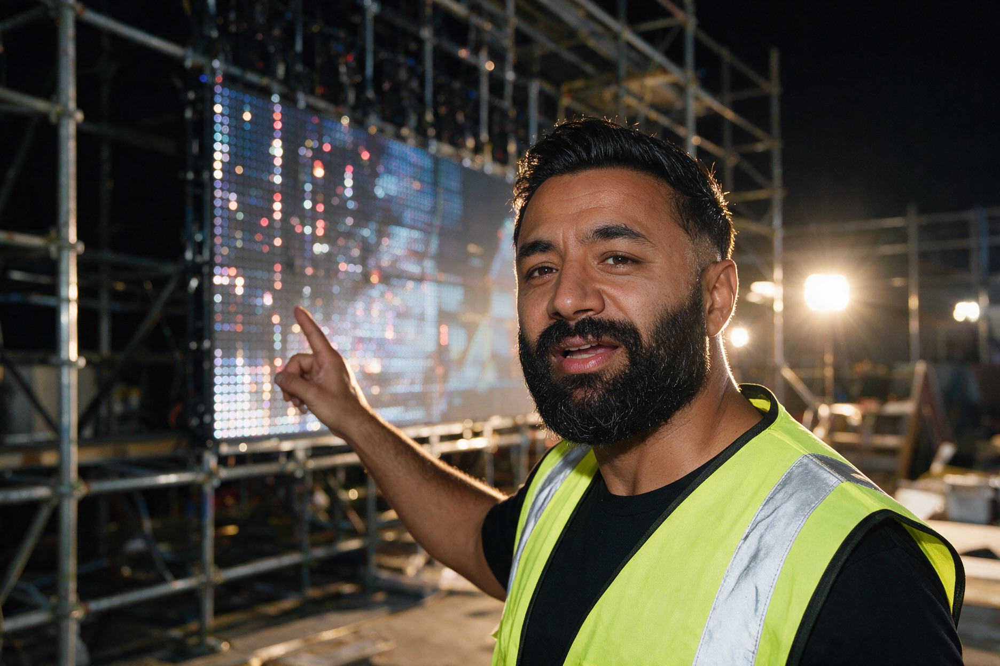
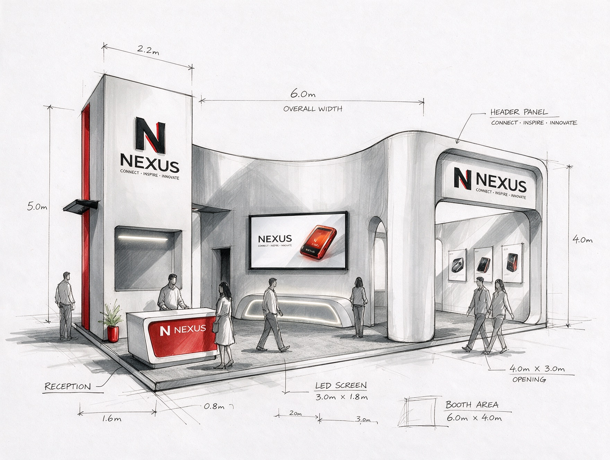
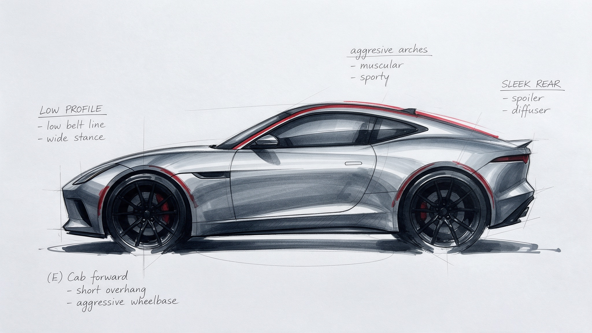
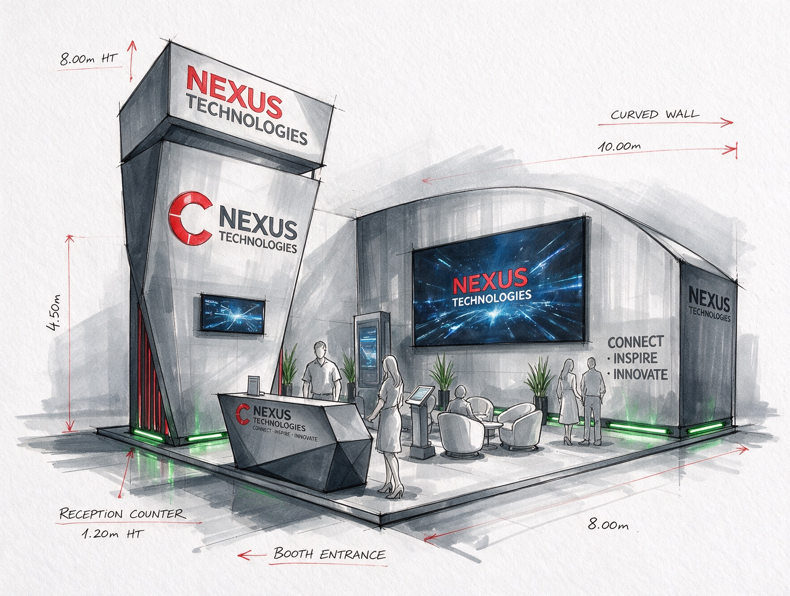
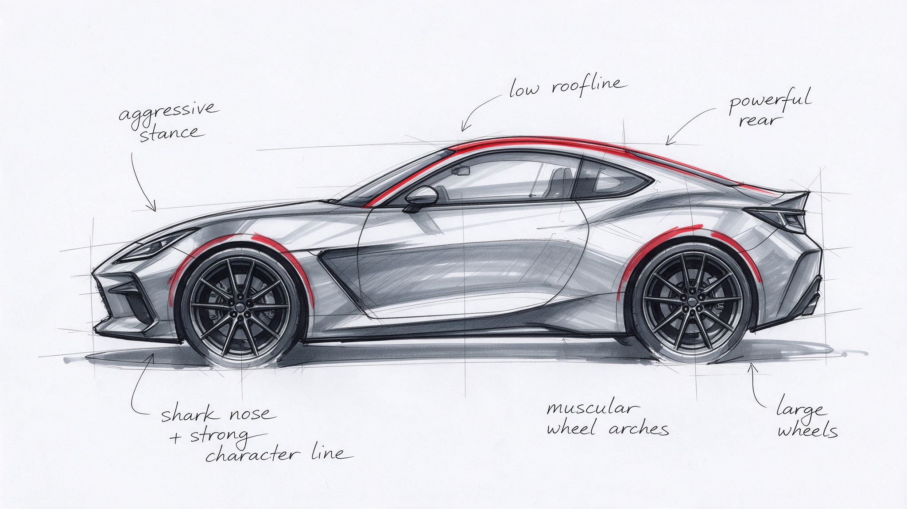
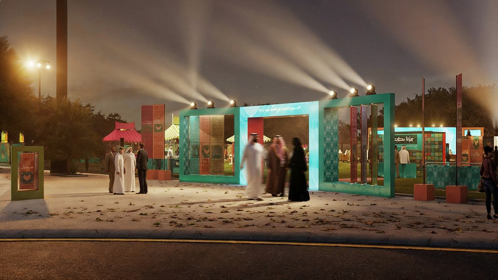

I draw the first line by hand.
Then it gets built. Scroll, and watch one go up: platform, walls, tower, header, counter, screen. Then the lights.

Yasser Kobeissi
Creative director. Events, exhibitions, motion, 3D. Lebanese, from Beirut, in Riyadh since 2019. Twenty years in. I still draw first.


Portrait upscaled 4× from the 420 px original; candids made with Magnific from the portrait. Real ones replace these, same crops.
Ten years in live television. No second take.
Ten years in events. The date does not move.
An idea is only real when it stands in a room and the lights come on.




"He draws it before the meeting ends, then builds exactly that."name · role · project
"Two markers, no mouse. Then a hall full of people."name · role · project
"The render was a promise. The night kept it."name · role · project
Hold to open the doors.
Everything you walked past was drawn by hand first and built on the date. The doors open at 20:40.

What do I want next?
Crazy goals. Big rooms.
If you have a room that needs an idea, send me the brief and I will send you the first line.